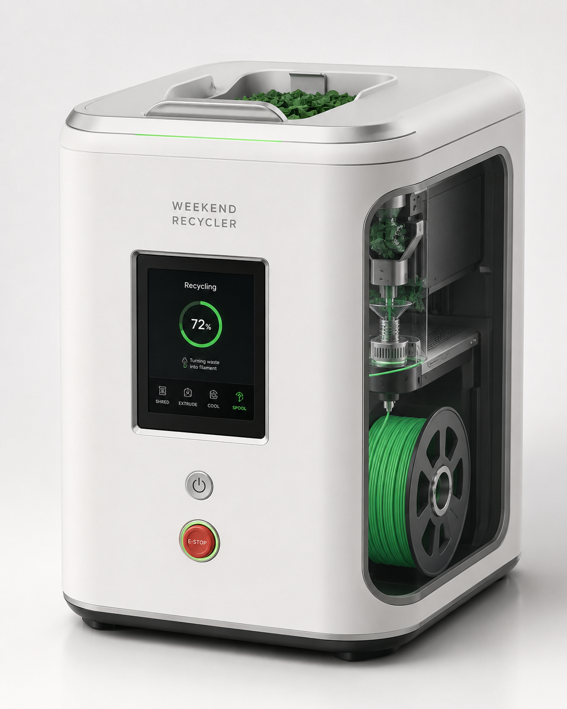
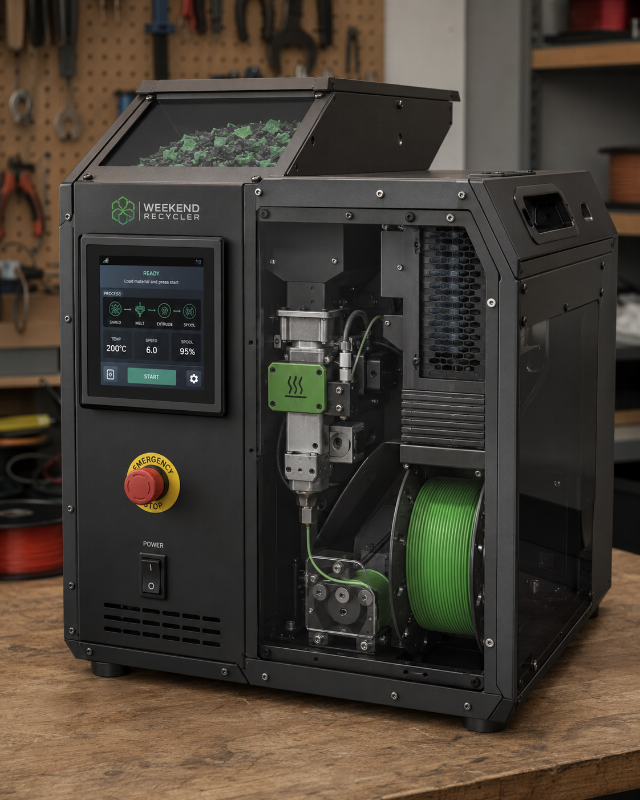
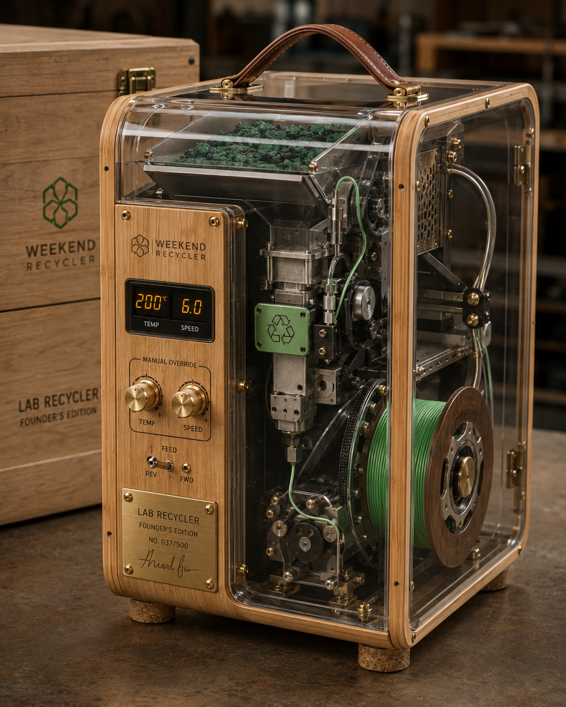
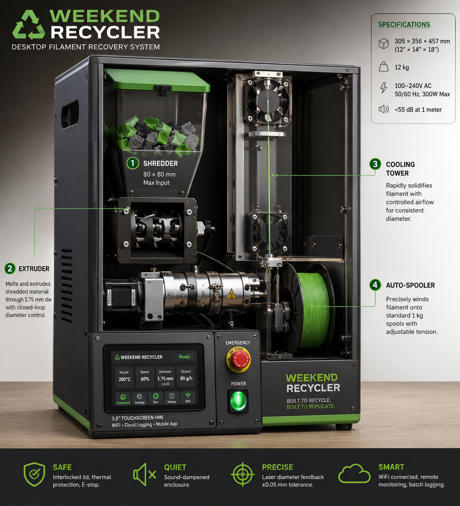

Shred
Clean failed prints and supports are reduced into small, inspectable flakes.
A ForgeLoop Labs Inc. project • Edson, Alberta
Weekend Recycler is a compact desktop system designed to shred clean 3D-print waste, extrude it into new 1.75 mm filament, cool it and wind it onto a reusable spool.

This is not another box of discarded supports, purge lines and failed prints.
One workflow
The first prototype keeps the controls simple so the mechanics can be tested, measured and improved.
Clean failed prints and supports are reduced into small, inspectable flakes.
A heated screw extruder melts and meters the material through a replaceable die.
An adjustable air path stabilizes the strand before it reaches the puller.
A controlled puller and low-tension spooler collect the new filament.
A product family
The one most people will own
Planned consumer model
A clean, compact consumer appliance with an approachable interface and an enclosed recycling process.

For workshops and serious makers
Rugged, accessible and repairable. Built to make the mechanics visible without turning the machine into a display piece.

500 numbered units maximum
Limited Founder’s Edition
Transparent polycarbonate, unique hardwood grain, brass controls, a leather-wrapped handle and an engraved numbered plate.
“Engineering can be art. Sustainability can be beautiful.”
Prototype V0
The first build deliberately removes the touchscreen, Wi-Fi, cloud logging and automated diameter correction. It uses manual controls, removable module plates and an open frame so every problem can be seen.
Architecture Four-module system defined
Subsystems Extruder, cooling, puller, spooler and shredder planned
Integration Open-frame engineering mule laid out
Procurement Canadian shopping and quotation list prepared
Next Bench-rig fabrication and controlled testing

Development without disclosure
ForgeLoop Labs Inc. is documenting the prototype carefully while keeping critical dimensions, component selections, supplier lists, costs and fabrication methods outside the public site.
Protected development record
Public pages show the product vision and prototype progress. Drawings, bills of materials, supplier information, pricing strategy and fabrication documents are reserved for approved collaborators, advisors and potential partners.
Approved visitors receive access to the full prototype archive after confidentiality terms are in place. Access can be revoked at any time.
The four-module prototype workflow has been defined.
Extrusion, cooling, pulling, winding and shredding have been separated for testing.
Build stages and supplier categories have been established without publishing sensitive details.
Follow the build
Contact ForgeLoop Labs Inc. about collaboration, pilot testing, education partnerships or private NDA access.